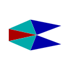
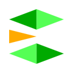

← Zum Spiel
USI - STAR FLEET
Spielanleitung für neue Spieler
Spielziel
Du bist der Führer einer Fraktion im Weltraum. Dein Ziel:
alle Planeten erobern und alle feindlichen Schiffe vernichten.
Es gibt 10 Planeten und 3 Fraktionen. Du wählst eine Fraktion am Anfang.
Die anderen beiden werden vom Computer gesteuert.
- Sieg: Keine feindlichen Sektoren und keine feindlichen Schiffe mehr vorhanden.
- Niederlage: Du besitzt keine Sektoren und hast keine Schiffe mehr.
Jede Fraktion kann maximal 85 Schiffe gleichzeitig besitzen.
Steuerung
Maus
| Linksklick + Ziehen | Schiffe markieren (Box-Auswahl) |
| Linksklick (ohne Ziehen) | Einzelnes Schiff markieren oder Deselektieren |
| Rechtsklick mit markierten Schiffen | Bewegungsbefehl: auf Planet = dorthin landen, ins Freie = dorthin fliegen |
| Rechtsklick ohne markierte Schiffe | Auswahl aufheben |
| Klick auf Mini-Map | Kamera zum gewählten Bereich bewegen |
| Kamera-Slider (rechts) | Kamerawinkel ändern (0° = von oben, 90° = perspektivisch) |
Tastatur im Spiel
| 1 - 8 | Schiffegruppe auswählen (alle Schiffen in dieser Gruppe werden markiert) |
| !, ", #, $, %, &, /, ( | Markierte Schiffe einer Gruppe zuweisen (nur mit markierten Schiffen) |
| P | Pause an/aus |
Planetenmenü-Tasten
Öffne das Planetenmenü, indem du auf einen Planeten klickst, den du besitzt.
| 1 | Nächstes Level bauen (erweitert Planet um einen Sektor) |
| 2 | Soldaten produzieren |
| 3 | Jäger bauen (benötigt mind. 2 Sektoren) |
| 4 | Transporter bauen (benötigt mind. 3 Sektoren + 100 Soldaten) |
| 5 | Fortgeschrittener Jäger (benötigt mind. 4 Sektoren) |
| 6 | Forts bauen (benötigt mind. 5 Sektoren) |
| 7 | Bomber bauen (benötigt mind. 6 Sektoren) |
| 8 oder C | Aktuellen Produktionsauftrag abbrechen |
| W oder 9 | Infanterie-Modus umschalten: Angriff → Verteidigung (nur für Bodentruppen auf diesem Planeten) |
| Mausklick auf „zurück“ | Planetenmenü schließen |
Einheiten & Schiffe
Schiffe werden auf deinen Planeten produziert und agieren automatisch im Weltall:
Kampfschiffe jagen und beschießen feindliche Schiffe in der Nähe,
und Transporter landen auf Planeten, um Soldaten zu landen und Sektoren zu erobern.
Kampfschiffe
Kampfschiffe (Typ 1–9) greifen feindliche Schiffe automatisch an, wenn sie in Reichweite sind.

Jäger
Schnelles Kampfflugzeug. Hohe Feuerrate (10 Schüss/sec), aber niedriger Einzelschaden und 75% Trefferquote. Geringe Panzerung.

Fortg. Jäger
Ausgeglichener Kampfflugzeug. Mittlere Feuerrate (7,5 Schüss/sec), 80% Trefferquote, mittlere Panzerung.
Fortg. Jäger
Ausgeglichener Kampfflugzeug. Mittlere Feuerrate (7,5 Schüss/sec), 80% Trefferquote, mittlere Panzerung.

Fortg. Jäger
Ausgeglichener Kampfflugzeug. Mittlere Feuerrate (7,5 Schüss/sec), 80% Trefferquote, mittlere Panzerung.

Elite Jäger
Schnelles Kampfflugzeug. Hohe Feuerrate (10 Schüss/sec), 75% Trefferquote, geringe Panzerung.

Elite Jäger
Schnelles Kampfflugzeug. Hohe Feuerrate (10 Schüss/sec), 75% Trefferquote, geringe Panzerung.

Bomber
Schweres Schiff. Geringe Feuerrate (4,3 Schüss/sec), aber hohe Trefferquote (90%) und hoher Einzelschaden. Starke Panzerung, aber langsam.

Fortg. Bomber
Schweres Schiff. Geringe Feuerrate (4,3 Schüss/sec), hohe Trefferquote (90%) und hoher Einzelschaden. Starke Panzerung, langsam.

Elite Bomber
Schwerstes Kampfflugzeug. Geringe Feuerrate (4,3 Schüss/sec), hohe Trefferquote (90%) und sehr hoher Einzelschaden. Sehr starke Panzerung, langsam.
Transporter
Transporter (Typ 10–12) transportieren 100 Soldaten zum Zielplaneten.
Wenn sie landen, werden die Soldaten auf dem Planeten zugewiesen und Sektoren erobern.
Transporter benötigen 100 Soldaten zum Bauen (werden vom Planeten abgezogen).
Transporter
Transportiert 100 Soldaten zum Zielplaneten und landet sie dort.

Fortg. Transporter
Transportiert 100 Soldaten zum Zielplaneten und landet sie dort.

Elite Transporter
Transportiert 100 Soldaten zum Zielplaneten und landet sie dort.
Gegeneinander (Stein-Schere-Papier)
Verschiedene Schiffstypen haben Vorteile und Nachteile gegeneinander:
Jäger
→ +40% Schaden gegen
Bomber
Bomber
→ +50% Schaden gegen
Transporter
Transporter
→ +35% Schaden gegen
Jäger
Fortgeschrittene Jäger: +25% gegen Bomber, –10% gegen Transporter
Zusätzlich:
- Schnellere Schiffe sind schwerer zu treffen (3% weniger Trefferquote pro 10 Geschwindigkeitseinheiten Unterschied).
- Jäger feuern sehr schnell (10 Schüss/sec), aber mit 75% Trefferquote.
- Bomber feuern langsam (4,3 Schüss/sec), haben aber 90% Trefferquote und hohen Schaden.
- Schilde regenerieren sich langsam im Laufe der Zeit.
Planetenbau
Klicke auf einen Planeten, den du besitzt, um das Planetenmenü zu öffnen.
Dort kannst du produzieren und die Infanterie verwalten.
Voraussetzungen für Produktion
Jede Einheit benötigt eine bestimmte Anzahl besetzter Sektoren auf dem Planeten:
| Befehl | Voraussetzung | Beschreibung |
|---|
| Taste 1 | Weniger als 8 Sektoren | Erweitere Planeten um einen Sektor |
| Taste 2 | Infanterie-Kapazität noch nicht erreicht | Soldaten produzieren (max. Sektoren × 200) |
| Taste 3 | Mind. 2 Sektoren | Jäger bauen |
| Taste 4 | Mind. 3 Sektoren + 100 Soldaten | Transporter bauen (Soldaten werden abgezogen) |
| Taste 5 | Mind. 4 Sektoren | Fortgeschrittener Jäger |
| Taste 6 | Mind. 5 Sektoren | Forts bauen (erhöhen Infanterie-KampfStärke im Verteidigungsmodus) |
| Taste 7 | Mind. 6 Sektoren | Bomber bauen |
Infanterie-Modus (Taste W)
Auf jedem Planeten, den mehrere Fraktionen gleichzeitig besetzen, kämpfen die
Bodentruppen gegeneinander. Der Infanterie-Modus bestimmt, wie deine Soldaten dabei agieren:
- Angriff — Soldaten kämpfen aggressiv (KampfStärke = Soldaten × Lebensbedingungen-Faktor)
- Verteidigung — Soldaten kämpfen defensiv (+25% Bonus + 25 Punkte pro Fort)
Achtung: Dieser Modus betrifft nur die Infanterie auf dem Planeten,
nicht die Schiffe im Weltall. Schiffe greifen feindliche Schiffe immer automatisch an.
Planetenverteidigung
Wenn du alle 8 Sektoren eines Planeten besitzt:
- Ab 7 Sektoren: Der Planet verfügt über Abfangraketen gegen feindliche Schiffe.
- Bei 8 Sektoren: Zusätzlicher Schutzschild (mit begrenzten HP) und mehr Raketen.
Eroberung durch Transporter
- Baue Soldaten auf deinem Planeten.
- Baue einen Transporter (benötigt 100 Soldaten + mind. 3 Sektoren).
- Markiere den Transporter und klicke mit der rechten Maustaste auf den Zielplaneten.
- Der Transporter fliegt dorthin und landet 100 Soldaten.
- Wenn mehrere Fraktionen denselben Planeten besetzen, kämpfen die Soldaten gegeneinander.
- Die Fraktion mit der höheren KampfStärke gewinnt und die unterlegene verliert Soldaten.
Tipps für den Anfang
- Produziere zuerst Soldaten und baue deinen Planeten auf (mehr Sektoren = mehr Produktionsmöglichkeiten).
- Baue früh Jäger, um deine Gebiete vor feindlichen Schiffen zu schützen.
- Transporter sind der einzige Weg, um neue Planeten zu erobern — baue sie sobald du genug Sektoren und Soldaten hast.
- Ein Planet mit keinem aktiven Produktionsauftrag hat 25% mehr Infanterie-KampfStärke.
- Im Verteidigungsmodus mit Forts sind deine Bodentruppen Stärker — nutze das auf wichtigen Planeten.
- Vergiss nicht, die W-Taste zu nutzen, um zwischen Angriff und Verteidigung zu wechseln.
- Gruppieren Sie Schiffe mit den Tasten 1-8 für schnelle Auswahl.
- Speichere häufig über den Save-Button rechts!
Viel Spaß beim Spielen!
USI - Star Fleet | Ein klassisches Weltraumstrategiespiel